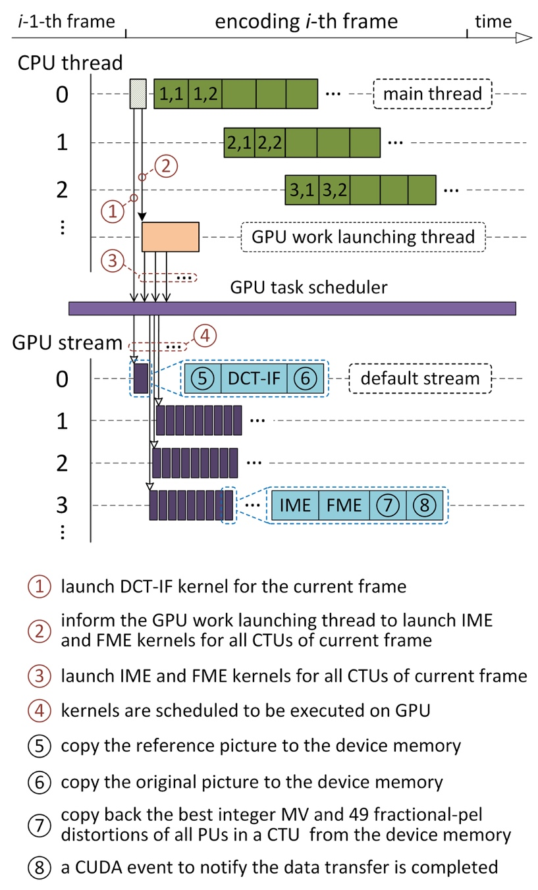
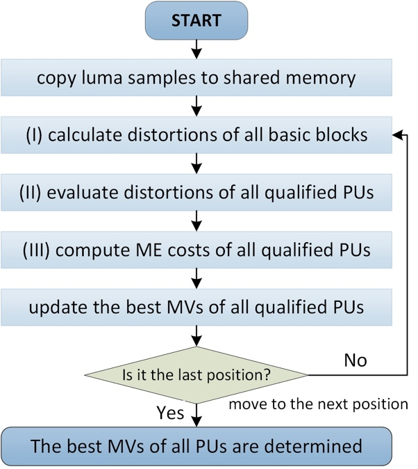
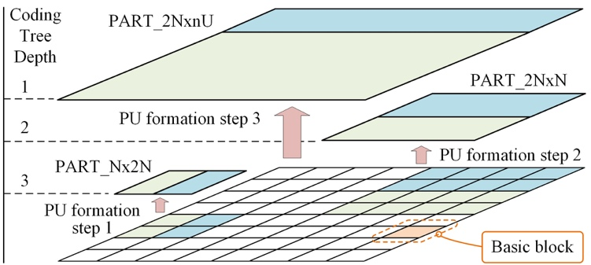
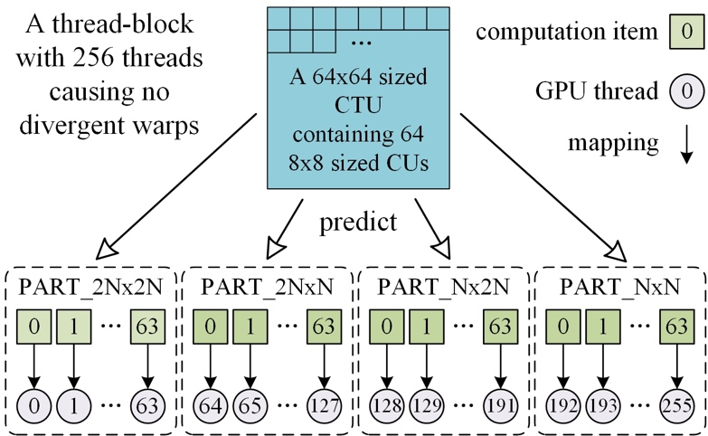
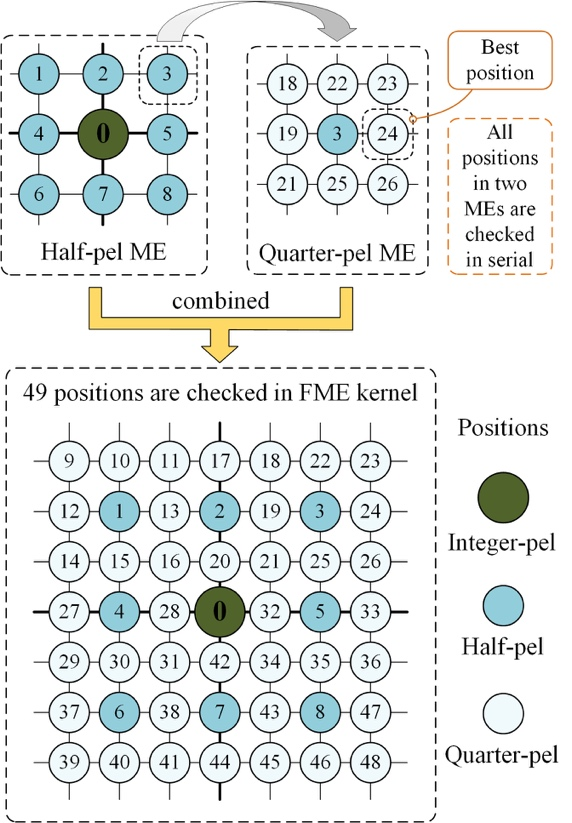
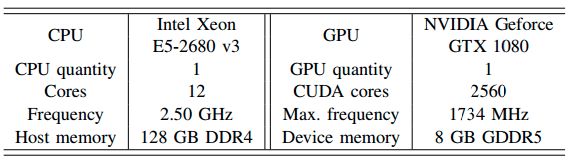
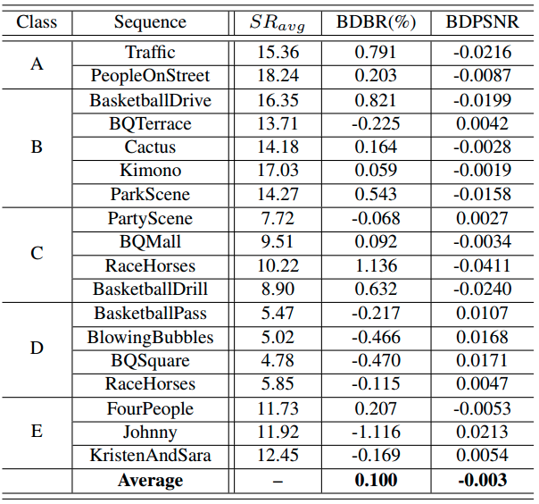
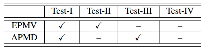
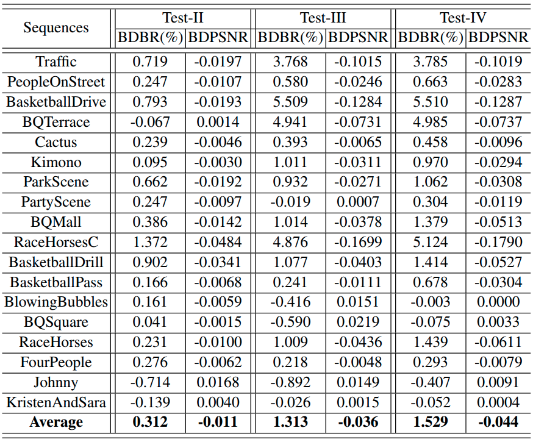

A Multi-grained Parallel Solution for HEVC Encoding on Heterogeneous Platforms
Bo Xiao, Hanli Wang, Jun Wu, Sam Kwong and C.-C. Jay Kuo
Overview
To improve the parallel processing capability of video coding, the emerging High Efficiency Video Coding (HEVC) standard introduces two parallel techniques, i.e., Wavefront Parallel Processing (WPP) and Tiles, to make it much more parallelfriendly than its predecessors. However, these two techniques are designed to explore coarse-grained parallelism in HEVC encoding on multicore Central Processing Unit (CPU) platforms. As the computing architecture undergoes a trend towards heterogeneity in the last decade, multi-grained parallel computing methods can be designed to accelerate HEVC encoding on heterogeneous systems. In this work, a Multi-grained Parallel Solution (MPS) is proposed to optimize HEVC encoding on a typical heterogeneous platform. A massively parallel motion estimation algorithm is employed by MPS to parallelize part of HEVC encoding on Graphic Processing Unit (GPU). Meanwhile, several other HEVC encoding modules are accelerated on CPU through the cooperation of WPP and an adaptive parallel mode decision algorithm. The parallelism between CPU and GPU is well designed and implemented to guarantee an efficient concurrent execution of HEVC encoding on multi-grained parallel levels.
Challenge in Parallelizing ME on GP
As for a 64×64 sized CTU with a maximum coding depth of 3, there are a total of 85 CUs when it is completely partitioned (full coding quad-tree) for encoding. The sizes of CUs at different depths are 64×64, 32×32, 16×16 and 8×8 in order. If the smallest size of Transform Unit (TU) is set to 4×4, the number of partition modes for inter prediction to be evaluated for each CU is 7, 7, 7 and 4, respectively, in the ascending order of depth. These 7 modes include all partition modes defined by HEVC except the mode PART N×N, while the 4 modes refer to 4 symmetrical partition modes (i.e., PART 2N×2N, PART 2N×N, PART N×2N and PART N×N). Then, the maximum number of evaluations of inter prediction with respect to one reference frame for a given CTU is 433.
Depending on the partition mode, the ME module is performed 1, 2, or 4 times for each inter prediction (one time per PU). The maximum number of invocations of the ME module with respect to one reference frame is 849.Apparently, the number of performing ME to encode a CTU will be multiplied by 849 if multiple reference frames are utilized. Early termination algorithms are therefore proposed to skip some coding modes, however the encoder still has to evaluate a large number of qualified modes. Furthermore, the flow path of encoding a CTU will become irregular when early termination algorithms are applied, which is detrimental to parallelize HEVC encoding. If the GPU-accelerated ME module behaves exactly as its original implementation on CPU, data must be exchanged between CPU and GPU, and CPU and GPU have to operate in an interleaved manner. As a consequence, the HEVC encoder on heterogeneous systems will suffer from the overwhelming synchronization and communication between CPUs and GPUs, as there are massive calls of the ME module.
MPS Implementation
In the proposed multi-grained parallel solution MPS, the MPME algorithm is utilized to accelerate the most computationally demanding ME process, in which three kernels are developed to offload the computations of IME, FME and DCTIF to GPU. In addition, the APMD algorithm is applied to defeat the disadvantages of WPP and further achieve coarse grained parallelism of HEVC encoding. These two algorithms work together to optimize HEVC encoding at multiple parallelization granularities. The invocations of parallel tasks realized by MPS on both sides of CPU and GPU are illustrated in Fig. 1, where the first four steps ① - ④ marked in red are executed by CPU while the rest steps ⑤ - ⑧ marked in black are processed on GPU.

Fig. 1 Task invocation implemented by MPS on CPU and GPU
As shown in Fig. 1, the CPU threads perform computations concurrently with the executions of kernels on GPU and data transfers between CPU and GPU. For simplicity, only the parallelism exposed by WPP is demonstrated in the upper part of the figure, where CTUs in different rows of a frame are processed simultaneously. All works executed on GPU are queued from the host system by calling dedicated functions. Once the i-th frame is about to be encoded, the reconstructed picture of the reference frame is copied firstly to the GPU device memory, denoted by ⑤, followed by the launch of the DCT-IF kernel. Afterwards, the original picture of the current encoding frame is transferred into the GPU memory (indicated by ⑥). The commands, including these for kernel invocations and data transfer, are issued from the main host thread for encoding, which is represented by ①. To improve the utilization of GPU, multiple CUDA streams are constructed, and the executions of IME and FME kernels of neighbouring CTUs are placed into different no-default CUDA streams, as demonstrated in the middle part of Fig. 1. In addition, the kernels are invoked in an asynchronous way in order to maximize the parallel execution between CPU and GPU. An exclusive host thread, referred to as GPU work launching thread, is engaged in issuing the asynchronous commands to launch the IME and FME kernels as well as initialize the corresponding data transfer. This process is indicated by ② and ③.
The IME kernel is designed to operate at CTU level, although a frame-level strategy is employed by the proposed MPME. The IME kernel iterates three stages over all pre-defined search positions to find out the best integer-pel MV, mainly including: (I) calculating the distortions of all basic blocks in a CTU at a given search position by means of SAD, (II) evaluating the distortions of all PUs in a CTU by summating up the distortions of its basic blocks, and (III) computing the ME cost of every PU from the motion vector bits and the distortion. The procedure of finding out the best integer-pel MVs of all qualified PUs for a CTU is illustrated in Fig. 2.

Fig. 2 The flow path of IME kernel
The steps to calculate the distortions of PUs in Stage-II at the coding depth 0, 1, 2 and 3 are referred to as PU formation step 4, 3, 2 and 1, respectively. In order to further illustrate the PU formation steps as well as the coding tree depth divergence, Figure 3 is presented as a descriptive example to show the concepts involved in the PU formation steps 1, 2 and 3.

Fig. 3 A descriptive example of the concepts involved in the PU formation steps 1, 2 and 3, including basic block, coding tree depth and PU formation steps.
There are 64 CUs with the size of 8×8 at the deepest coding tree depth (depth 3), where four partition modes, including PART 2N×2N, PART 2N×N, PART N×2N and PART N×N, are available to predict each CU. Every 64 consecutive threads are responsible for distortion calculations defined in one of these four partition modes, therefore the computation of each CU is executed by one thread. As shown in Fig. 4, the mapping from work items at PU formation step 1 to threads creates no divergent warp of threads.

Fig. 4 Computation-to-thread mapping of PU formation step 1.
The FME kernel, corresponding to performing the sub-pel refinement of motion search, takes the same design as IME and is always invoked as a successive operation after IME in the same CUDA stream. It includes half-pel and quarter-pel refinements. These two refinements are shown in the upper part of Fig. 5, where the searched positions with labels 3 and 24 are randomly selected for demonstration. Compared with the original FME in the HM encoder, the FME kernel searches a total of 49 fractional-pel positions as illustrated in the lower part of Fig. 5, because both of the half-pel and quarter-pel search refinements are performed simultaneously as detailed above.

Fig. 5 Illustration of fractional-pel search implemented by FME kernel
Experimental Evaluation
The detailed information of the platform for experiments is listed in Table I.
Table I Platform Configuration

The average speedup and the corresponding coding efficiency achieved by the proposed MPS over the anchor encoder are tabulated in Table II.
Table II Average Speedup and Coding Efficiency Achieved by MPS

To evaluate the contribution of EPMV and APMD algorithms to coding efficiency, experiments are carried out under 4 test conditions defined in Table III.
Table III Test Conditions

Obviously, the Test-I condition is the same as that to conduct experiments of which the results are shown in Table II. Other experimental results are tabulated in Table IV.
Table IV Coding Efficiency Achieved by Contributions

Instructions for Running MPS Encoder:
Prerequisites:
CUDA 8.0 / 9.2 / 10.0
Downloads:
Pre-built binaries of MPS encoder on Windows and Ubuntu
Ubuntu 18.04.02 / Ubuntu 16.04.05
Windows 7 / 8 / 10
Run the MPS encoder:
1. Prepare the configuration files and video sequences;
2. Enter the root directory containing the MPS encoder;
3. ./TAppEncoderStatic -c a-config-file.cfg -f 200 -q 24 -v -1 --WaveFrontSynchro=1 --EnableWPP=1 --ParallelMD=1 --InterMEstGpu=1
Specific command arguments
All contributions proposed by MSP, including WPP multithreading implementation, adaptive parallel mode decision (APMD) and massively parallel motion estimation(MPME), can be enabled through the command arguments as the original ones of HM do. For example, multithreading implementation of WPP can be enabled by providing argument like ‘--EnableWPP=1’
1) EnableWPP, WPP works jointly with flag WaveFrontSynchro.
2) ParallelMD, adaptive parallel mode decision(APMD).
3) InterMEstGpu, massively parallel motion estimation(MPME).
Source Code:
Original illustration: image placeholderMPS.zip
Citation:
Please cite the following paper if you use this code:
Bo Xiao, Hanli Wang, Jun Wu, Sam Kwong, and C.-C. Jay Kuo, A Multi-grained Parallel Solution for HEVC Encoding on Heterogeneous Platforms, IEEE Transactions on Multimedia, vol. 21, no. 12, pp. 2997-3009, Dec. 2019.